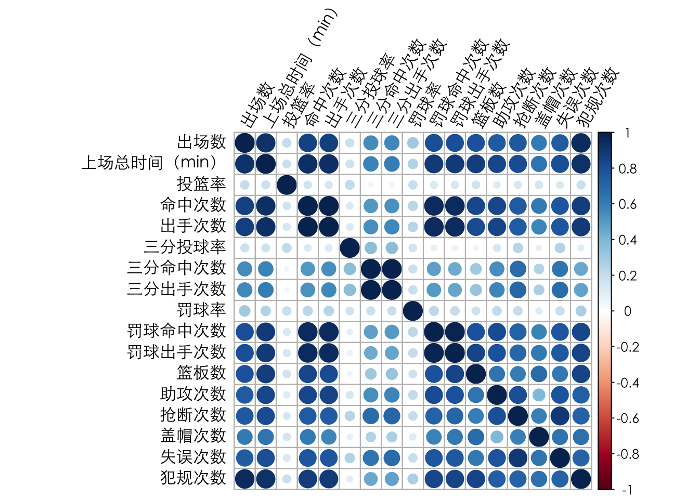
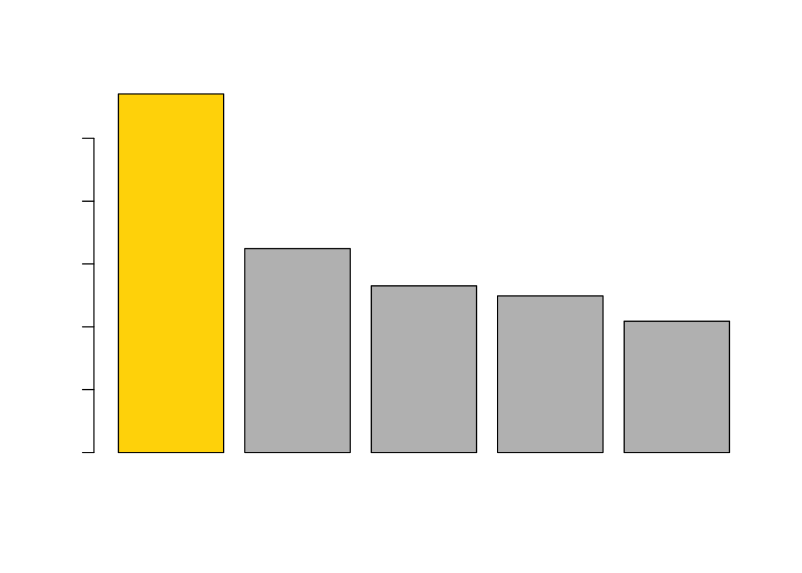
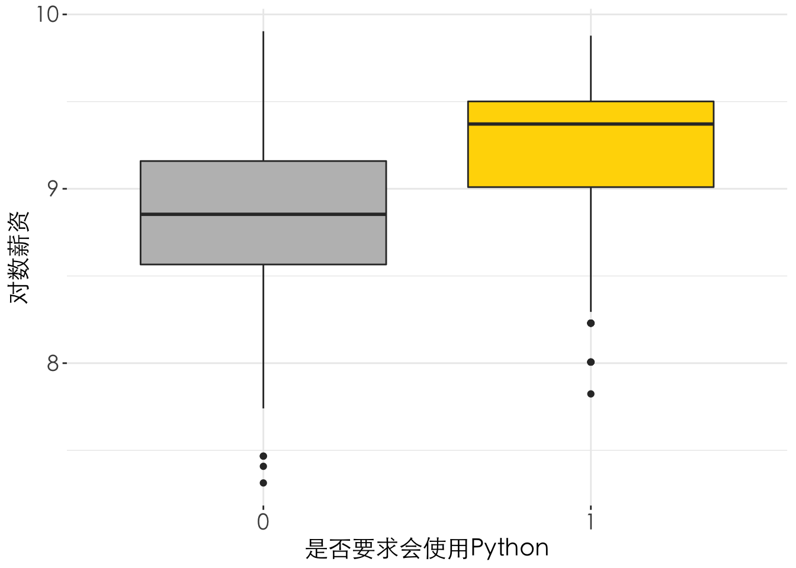
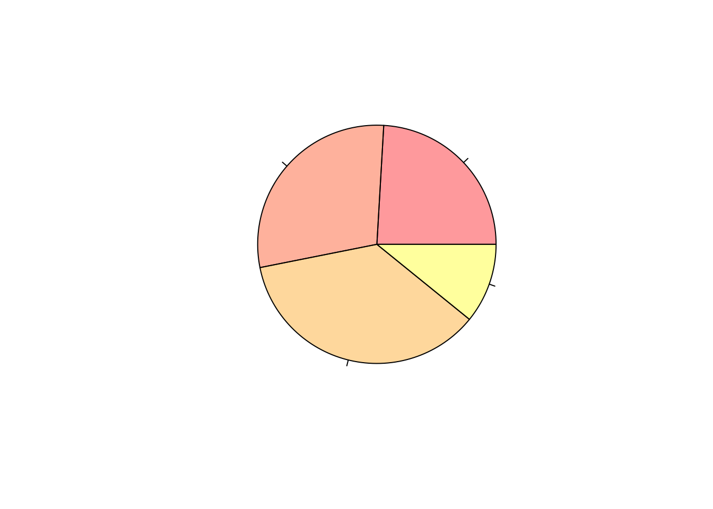
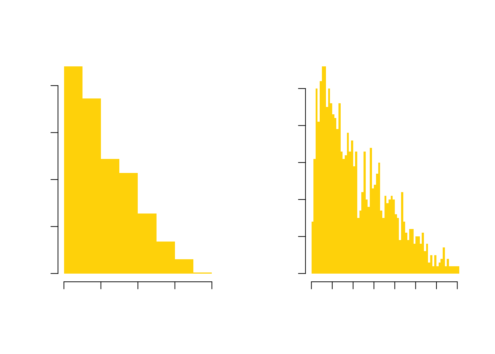
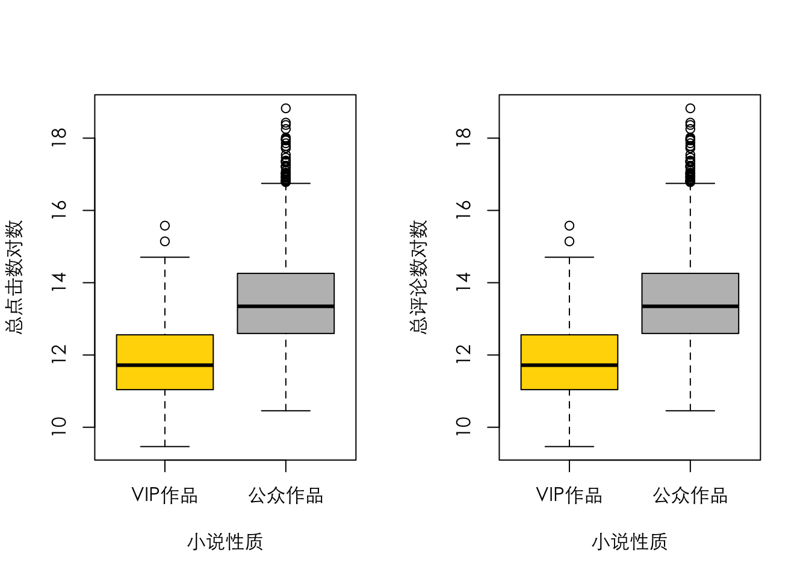

4 第4章：描述分析
### 数据准备 ###
# 清空工作空间
rm(list = ls())
# 载入相关包及设定路径
library(plyr)
library(dplyr)
library(stringr)
library(tidyr)
library(corrplot)
library(ggplot2)
library(zoo)
library(reshape2)
library(plotly)
Sys.setlocale("LC_ALL", "zh_cn.utf-8")## [1] "zh_cn.utf-8/zh_cn.utf-8/zh_cn.utf-8/C/zh_cn.utf-8/en_US.UTF-8"# 读入数据
novel = read.csv('./data/novel.csv', fileEncoding = "UTF-8")
# 数据查看与异常处理
head(novel)## 人气排序 小说名称 作者 小说类型 总点击数 会员周点击数 总字数 评论数 评分
## 1 1 一念永恒 耳根 仙侠小说 4383898 10691 1155534 435429 9.8
## 2 2 斗战狂潮 骷髅精灵 仙侠小说 1678379 36587 422116 23159 10.0
## 3 3 天影 萧鼎 仙侠小说 1248708 32019 373763 25253 9.8
## 4 4 不朽凡人 鹅是老五 仙侠小说 2457382 9610 995669 146715 9.9
## 5 5 玄界之门 忘语 仙侠小说 3736897 6709 1784999 238113 9.8
## 6 6 龙王传说 唐家三少 玄幻小说 2968846 3080 1552654 293934 9.8
## 小说性质 写作进程 授权状态 更新时间
## 1 公众作品 连载中 Ａ级签约 2016/10/23 11:50
## 2 公众作品 连载中 Ａ级签约 2016/10/22 17:05
## 3 公众作品 连载中 Ａ级签约 2016/10/23 10:40
## 4 公众作品 连载中 Ａ级签约 2016/10/22 20:50
## 5 公众作品 新书上传 Ａ级签约 2016/10/23 10:15
## 6 公众作品 新书上传 Ａ级签约 2016/10/23 7:00
## 内容简介
## 1 一念成沧海，一念化桑田。一念斩千魔，一念诛万仙。??? 唯我念……永恒??? 这是耳根继《仙逆》《求魔》《我欲封天》后，创作的第四部长篇小说《一念永恒》
## 2 双月当空，无限可能的英魂世界 \n??? 孤寂黑暗，神秘古怪的嬉命小丑 \n??? 百城联邦，三大帝国，异族横行，魂兽霸幽 \n??? 这是一个英雄辈出的年代，人类卧薪尝胆重掌地球主权，孕育着进军高纬度的野望！ \n??? 重点是……二年级的废柴学长王同学，如何使用嬉命轮盘，撬动整个世界，学妹们，请注意，学长来了！！！ \n??? 斗战一群：21222419（两千人战力群）\n??? 斗战二群：12962047 \n??? 骷髅的微信公共号：kuloujingling00 \n??? 新浪微博：骷髅精灵
## 3 阴阳分天地，五行定乾坤。\n??? 天穹之下岁月沧桑的中土神州，正是仙道昌盛的时代，亿万生灵欣欣向荣。\n??? 纵横千万里间，总有人间一幕幕悲欢离合，在恢弘长生的仙道中上演着。\n??? 有光便有暗，天穹之下光辉之中，仍有沉默的影子悄然前行着……\n??? 新书上线！精彩万分！请各位书友多多投票支持！另外，大家可以添加微信公众号zhuxianxiaoding（诛仙萧鼎），QQ官方群 176378308 进行交流。
## 4 在这里，拥有灵根才能修仙，所有凡根注定只是凡人。\n??? 莫无忌，只有凡根，一介凡人！\n??? 是就此老去，还是不甘？???
## 5 天降神物！异血附体！??? 群仙惊惧！万魔退避！??? 一名从东洲大陆走出的少年。??? 一具生死相依的红粉骷髅。??? 一个立志成为至强者的故事。??? 一段叱咤星河，大闹三界的传说。??? 忘语新书，已完本《凡人修仙传》》《魔天记》。
## 6 伴随着魂导科技的进步，斗罗大陆上的人类征服了海洋，又发现了两片大陆。魂兽也随着人类魂师的猎杀无度走向灭亡，沉睡无数年的魂兽之王在星斗大森林最后的净土苏醒，它要带领仅存的族人，向人类复仇！\n??? 唐舞麟立志要成为一名强大的魂师，可当武魂觉醒时，苏醒的，却是……\n??? 旷世之才，龙王之争，我们的龙王传说，将由此开始。\n???4.1 柱状图、直方图、饼图
4.1.1 柱状图
# 统计小说类型频数
a=table(novel$小说类型)
# 对频数排序
a=a[order(a,decreasing = T)]
# 绘制柱状图
par(family = "SimSun",las = 2)
barplot(a[1:5],names.arg = names(a)[1:5],family="SimSun",ylab = "频数",xlab="",col = c("gold","grey","grey","grey","grey"))
title("各类型小说频数分布柱状图",family="SimSun")
# 求得各类型小说平均点击数的均值
means<-novel%>%
group_by(小说类型)%>%
summarise(mean = mean(总点击数/10000))%>%
arrange(desc(mean))
par(family = "SimSun",las = 2)
# 绘制均值柱状图
barplot(means$mean[1:5], names.arg=means$小说类型[1:5],family="SimSun",ylab = "总点击数(万次)",xlab="",col = c("gold","grey","grey","grey","grey"))
title("各类型小说平均总点击数",family="SimSun")
options(scipen = 200)# 构建绘图所需数据矩阵d
d = novel%>%group_by(小说类型,小说性质)%>%
dplyr::summarise(count=n())%>%
spread(小说性质,count)%>%
select(-V1)%>%
arrange(desc(公众作品))
topics = d$小说类型[1:5]
artwork_type = colnames(d)[2:3]
# 选取前五类小说
d = matrix(as.numeric(t(d[1:5,])[-1,]),nrow=2)
# 对列命名
colnames(d) = topics
# 对行命名
rownames(d) = artwork_type
# 绘制分组柱状图(beside = T)
par(mfrow=c(1,2), family = "SimSun",las=2)
barplot(d, beside = T, col = c("gold","grey"), ylab = "频数", ylim = c(0,500))
# 添加图例
legend("topright", legend = rownames(d), fill = c("gold","grey"), cex = 0.8)
# 绘制堆积柱状图(beside = F)
barplot(d, beside = F, col = c("gold","grey"), ylab = "频数", ylim = c(0,700))
# 添加图例
legend("topright", legend = rownames(d), fill = c("gold", "grey"), cex = 0.8)
4.1.2 饼图
# 将小说类型进行简要合并
novel$'小说类别' = "其他"
novel$'小说类别'[novel$小说类型 == "都市小说" | novel$小说类型 == "职场小说"] = "都市类小说"
novel$'小说类别'[novel$小说类型 == "科幻小说" | novel$小说类型 == "玄幻小说" | novel$小说类型 == "奇幻小说"] = "幻想类小说"
novel$'小说类别'[novel$小说类型 == "武侠小说" | novel$小说类型 == "仙侠小说"] = "武侠类小说"
# 求出每一类所占百分比
ratio = table(novel$'小说类别') / sum(table(novel$'小说类别')) * 100
# 定义标签
label1 = names(ratio)
label2 = paste0(round(ratio, 2), "%")
# 绘制饼图
par(family="SimSun")
pie(ratio, col = heat.colors(5, alpha = 0.4), labels = paste(label1, label2, sep = "\n"), font = 1)
4.1.3 直方图
# 去掉异常值
chara = sort(novel$总字数/10000)[1:1500]
# 绘制直方图
par(mfrow=c(1,2),family = "SimSun",las=2)
hist(chara, breaks = 10, xlab = "总字数(万字)", ylab = "频数", main = "", col = "gold",border = NA)
# 调整直方图组距
hist(chara, breaks = 100, xlab = "总字数(万字)", ylab = "频数", main = "", col = "gold",border = NA)
4.2 箱线图、饼图、散点图
4.2.1 折线图
# 获取数据
data(AirPassengers)
# 画时间序列图
plot(AirPassengers)4.2.2 箱线图
## 定性与定量变量--分组箱线图 ##
# 将画板分成1行2列
par(mfrow=c(1,2),family = "SimSun")
# 不同性质的小说总点击数和评论数有差别吗
novel_ = novel%>%filter(小说性质 == '公众作品'|小说性质 == 'VIP作品')%>%mutate(小说性质=factor(小说性质))
boxplot(log(总点击数) ~ 小说性质, data = novel_, col = c('gold','grey'), ylab = "总点击数对数")
boxplot(log(总点击数) ~ 小说性质, data = novel_, col = c('gold','grey'), ylab = "总评论数对数")
4.2.3 散点图
## 两个定量变量--散点图 ##
# 去除较大的异常值后画图
test = novel[novel$评论数 < 8000 & novel$总点击数 < 200000, ]
x = test$总点击数
y = test$评论数
par(family = "SimSun")
plot(x, y, pch = 1, cex = 0.6, xlab = "总点击数", ylab = "评论数")